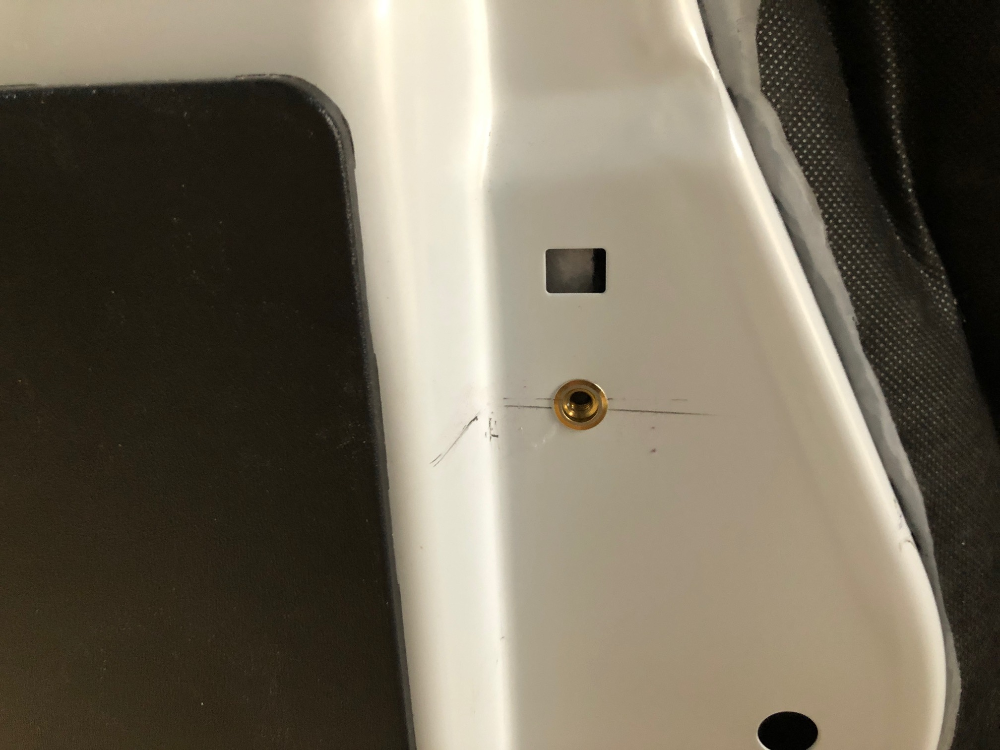
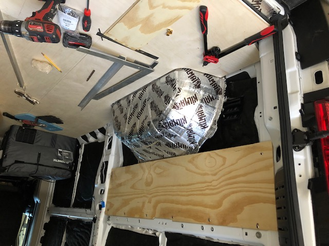
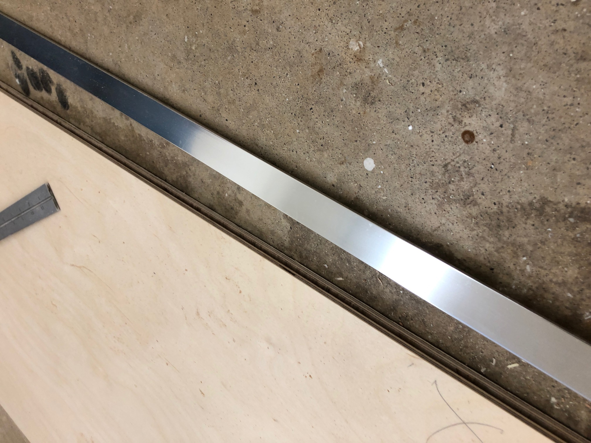
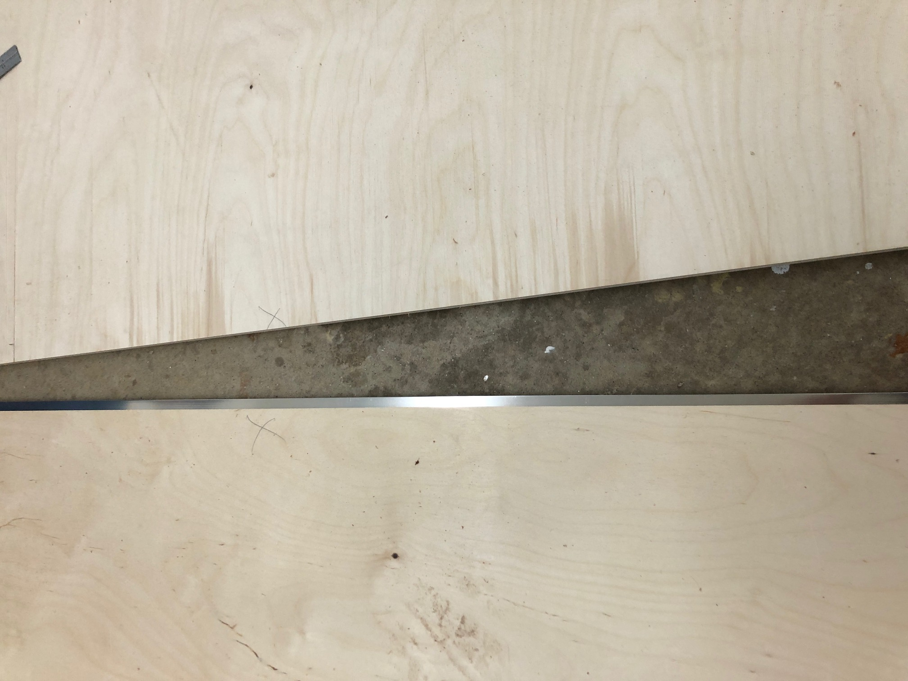
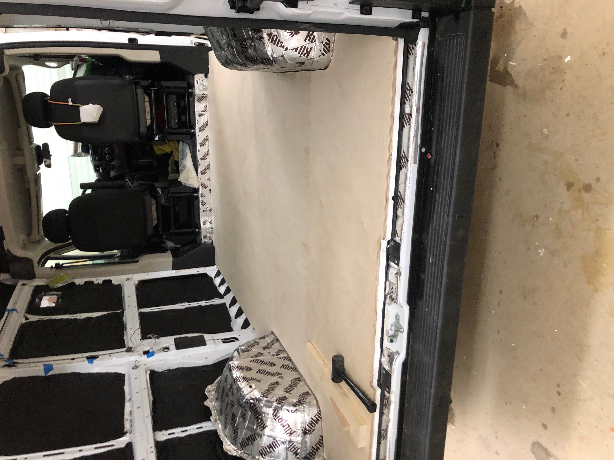
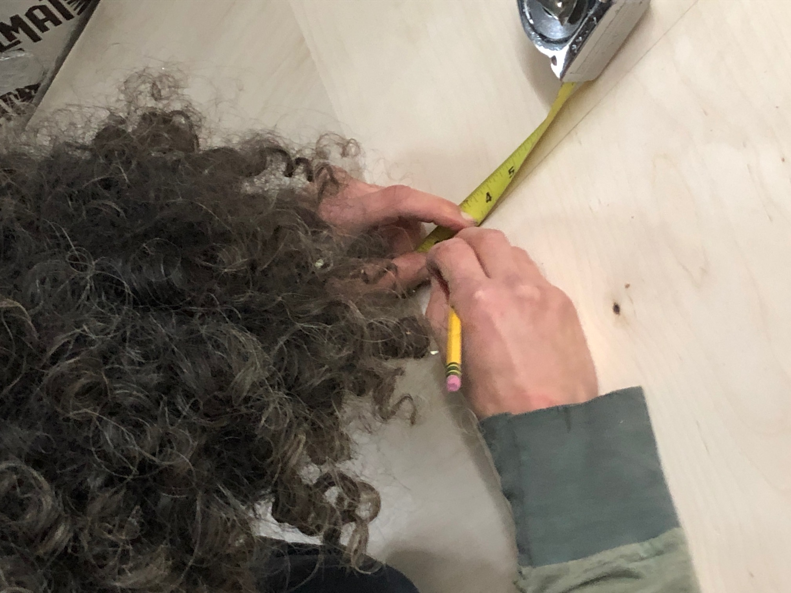
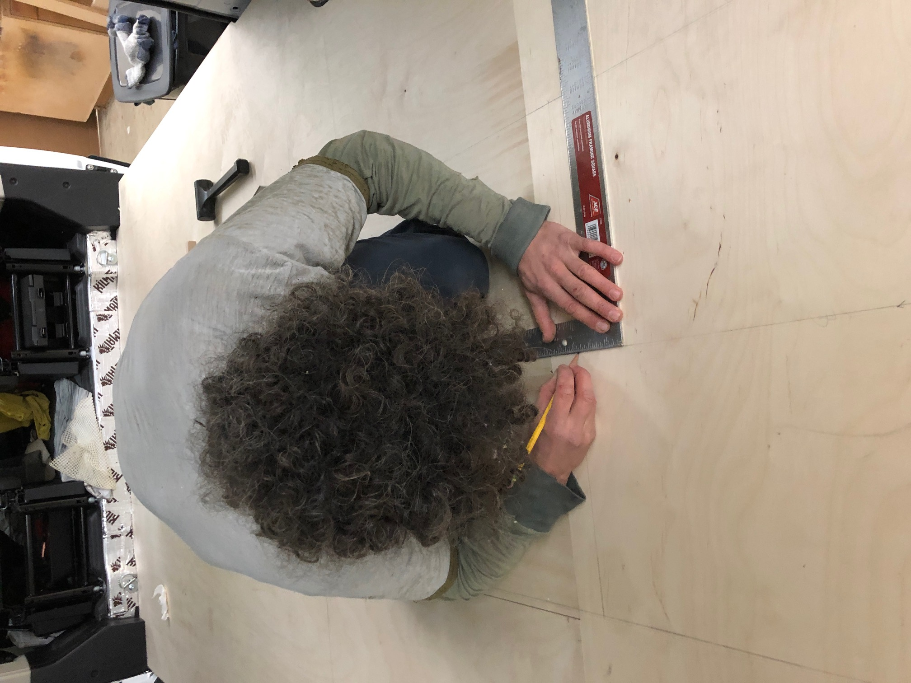
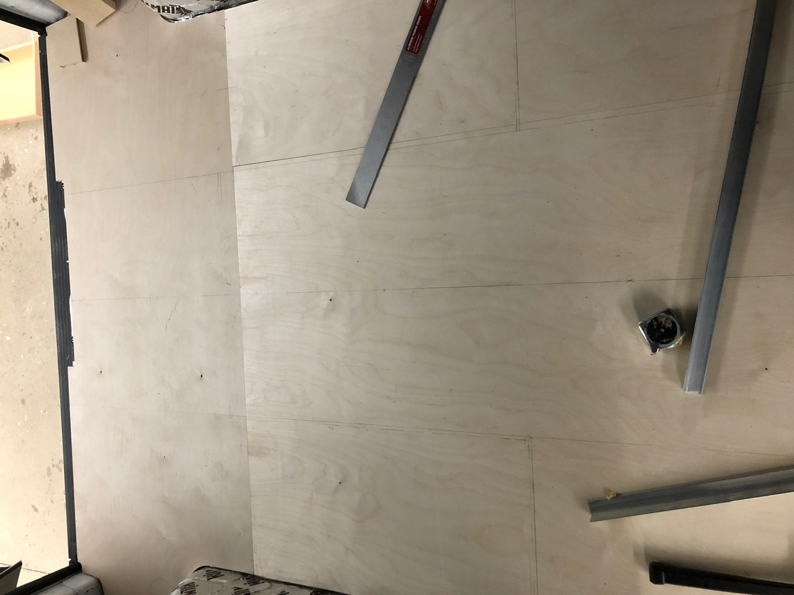

I am building a tiny home on wheels and decided to make a floating wood floor and bed for my woodworking project (along with a few floating wine bottle holders with the scraps). The bed will be grounded to the wood floor. I used 12mm Baltic Birch ply, 1"x1" poplar on the sides to add support, aluminum angles to ground the bed and rivet nuts to attach ply to the wall as a ground for the bed and future elements, like panels. The floor is made in three pieces and held together by a 1 inch aluminum flat.
What I learned from the process (or was reminded of):
- How to use my measuring tape and blue tape to accurately estimate how much plywood I need to build.
Furniture grade wood was one of the biggest expenses. Part of me wishes I had just used scrap wood
found in the shop. But then again, light, 1/2 ply furniture is going to save me money in gas over the next decade.
- How to make templates from scratch using brown paper and strong magnets instead of tape.
How to work with large templates that come with the van, like the floor mat to save loads of time and ensure accuracy.
- How to create a center line to plan my entire layout using a measuring tape, a right angle, a straight edge, and blue tape.
- Woodwork and Metalwork go hand in hand in van builds. This is a house that will move,
vibrate and dance across hundreds of thousands of miles over the years.
For example, I installed rivet nuts which are used to ancor the furniture to the van in a variety of ways.


routed the edge of the floor and joined the pieces with aluminum flats I had to cut.   
- Finding creative ways to fix mistakes is where skill is developed. For example, If I strip a riv nut, I had to learn the skill of tapping new threads.


